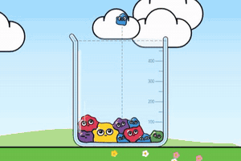

Jogar o Merge Lab1
Merge Lab
O conceito que você mandou, com física de verdade: soltar, fundir iguais e subir os 13 níveis.
O que é novo
- A pilha assenta e "derrete" no formato do pote: esperar abre espaço.
- A cor do nível novo nasce na costura e avança pelo corpo. Do nível 7 em diante, cada um tem uma textura: bolinhas, arco-íris, ondas, listras de bala e galáxia.
- Os 4 botões da referência: trocar, chacoalhar, alargar e mira.
- Prêmios de marco: calor (escoa), gelo (trava), tesoura (divide) e gota de tinta (sobe um nível).
Ponto forte na Poki
Lido em um segundo, com a conversão para jogar (C2P) mais alta. A barra de "?" puxa a próxima partida, e o pote nunca transborda nos 3 primeiros minutos.
Risco
O gênero Suika é conhecido. O "derreter" e a cor têm de aparecer nos primeiros 15 segundos e no vídeo de capa.
Arrastar e soltar · ← → e espaço · 1 a 5 para os reforços · Esc pausa
Medido: o bot joga 3 minutos sem perder; a física roda em 1,7 a 3,3 ms por quadro com o pote mais que cheio (desktop).